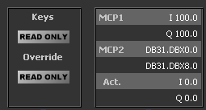

-
Un MCP483/310 software pentru Sinumerik
VirtualMCP este un mic program ce emuleaza comportamentul unui panou de control SINUMERIK de tip MCP483 sau MCP310 atunci cand este conectat la un echipament SINUMERIK 840D.
Programul poate fi utilizat pentru controlul la distanta a unui echipament real, atunci cand panoul MCP real este inaccesibil sau greu accesibil pentru utilizator.
Download ... Goto GitHub -
Conectare

Adresa PLC: setati aici adresa TCP/IP a sistemului la care doriti sa va conectati (Step7-PLC sau actionare Sinamics Drive)
Rack: Sina (rack) pe care se afla unitatea CPU Step7 (in mod uzual Rack 0).
Slot: Pozitia in Rack a unitatii CPU (Step7 slot of the CPU). Slot 0 pentru seria S7-1500 sau Slot 2 pentru seria S7-300
Conectare la un sistem 'tinta': Dati 'Click' pe butonul 'Conectare'.
-
Adrese MCP I/O

Setari pentru conexiune: Adrese Intrari si Iesiri MCP:
MCP1:Adresele I/O pentru primul MCP.
MCP2:Adresele I/O pentru al doilea MCP.
Act.:Adresele I/O setate pentru VirtualMCP. Campurile sunt editabile.
Intr-o configuratie Sinumerik, Panoul de Control a Masinii (Machine Control Panel) (MCP) este considerat un modul de Intrari/Iesiri pentru PLC. In mod simplificat putem considera ca tastele de pe MCP, comutatoarele de Override si selectorul cu cheie pentru nivelul ce acces sunt conectate hardware la intrari PLC in timp ce LED-urile sunt conectate hardware la iesiri ale PLC.
Pentru a configura modulele MCP, fabricantul masinii unelte (OEM) trebuie sa defineasca numarul de panouri MCP folosite si adresele I/O corespunzatoare acestora prin parametrizarea apelului functiei FB1,DB7 din blocul OB100.
La fiecare conectare la PLC, programul VirtualMCP comuta automat in modul 'Read-Only', apoi citeste din DB7 numarul de panouri MCP si pointer-ii la primele Intrari si Iesiri ale acestora.
Nota In unele cazuri fabricantul instalatiei (OEM) prefera utilizarea unor adrese dintr-un bloc DB in locul Intrarilor si Iesirilor, precum in imagine. Acest mod de adresare pare ciudat dar este inca utilizat de catre OEM.
-
Mod 'Read Only' / Mod 'Control'
In modul 'Read-Only', programul citeste starea tastelor, butoanelor de control avansuri (override), LED-urilor, etc de pe sistemul real fara sa modifice date. Apasarea unei taste in program nu infuenteaza starea sistemului real.
Modul 'Control' poate fi activat prin apasarea butonului (Click) 'Read-Only / Control'.
-
Salvati setarile cu butonul "Save"
-
Alte setari
La apasarea butonului "Save", setarile sunt salvate in fisierul "monitor.ini" localizat in acelasi director/folder cu fisierul executabil.
Toate setarile pot fi modificate in acest fisier si vor fi activate la pornirea/repornirea programului.
[display] ;diverse setari referitoare la afisare
language=0 ;0 = Romana; 1 = English
stayontop=0 ;0 = Stay on Top dezactivat; 1 = Stay on Top activat
displ_time=50 ;Afisare ecran la fiecare 50ms
[connection] ;Diverse setari referitoare la conectare
autoreconnect=false ;Cand valoarea este true: La pierderea conexiunii sau daca o cenexiune nu este posibila, programul va incerca din nou sa se conecteze pana cand o cenexiune este efectuata sau este apasat butonul 'Deconectare'
reconnect_time=5 ;Numarul de secunde intre doua incercari de reconectare
[server] ;Adresa unitatii CPU a PLC
address=192.168.212.222 ;Adresa IP a PLC CPU
rack=0 ;Numarul rack-ului pe care se afla PLC CPU, implicit 0
slot=0 ; Numarul slotului pe care se afla PLC CPUr, implicit 0 pt S7-1500 sau 2 pt S7-300
[address] ;Setari referitoare la adresele PLC
in_0_type= I ;[I/Q/M/DB] ;Tip operand pentru prima coloana: intrari in_0_dbno= 0 ;[numar] ;Numar DB, daca tipul operandului este DB in_0_addr= 0 ;[numar] ;Numar Byte out_0_type= Q ;[I/Q/M/DB] ;Tip operand pentru a 2-a coloana: iesiri out_0_dbno= 0 ;[numar] ;Numar DB, daca tipul operandului este DB out_0_addr= 0 ;[numar] ;Numar Byte -
Versiuni:
v23.01.24: Scalare la dimensiunea ferestrei.
v20.05.26: Corectat unele probleme legate de dimensiunea fonturilor.
v20.05.23: La conectare sunt citite setarile pentru MCP din echipamentul real: numarul de module MCP si adresele acestora.
v20.05.14: Simulare pentru MCP483, MCP310, posibilitatea de a seta 'Read-Only' sau 'Control Taste' sau 'Control Taste si Override'.
Proiect dezvoltat in Qt5, folosind Snap7 (de Davide Nardella).